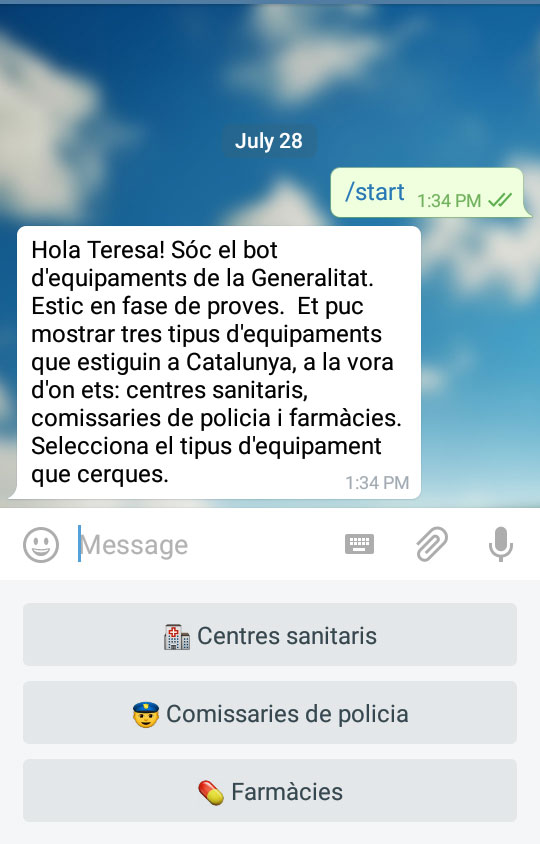
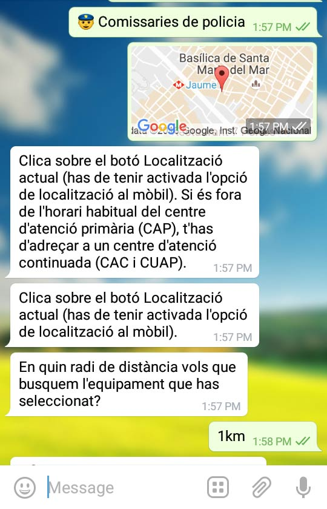

Bot Telegram
Descripció del servei
El servei @Generalitat_Bot ofereix a la ciutadania informació sobre equipaments. L'usuari pot localitzar el centre sanitari, la farmàcia o la comissaria de policia més propera segons la seva ubicació actual o la que indiqui expressament, a partir d'un automatisme de consulta a la base de dades d'equipaments oficials de la Generalitat de Catalunya.
Com funciona el bot de gencat
Per usar aquest servei, podeu accedir-hi a través de @Generalitat_Bot i fer els passos següents.
- Clicar el botó '/start' o escriure-ho a la caixeta de text.
- Seleccionar el tipus equipament entre les tres opcions: comissaries de policia, farmàcies i, en el cas dels centres sanitaris, hospitals, centres d'atenció primària i els altres centres d'atenció primària fora de l'horari habitual.
- Geolocalitzar-vos (si no ho esteu, ho heu d'activar a la configuració del vostre telèfon). Podeu geolocalitzar-vos amb el botó 'Localització actual' o bé amb el símbol del clip (d'adjuntar fitxer) per als casos que interessi geolocalitzat-vos en un lloc diferent on ets.
- Seleccionar en quin radi de distància ho vols buscar (1km o 5km).
 
El bot ofereix, si n'hi ha, resultats. Els resultats s'ordenen per proximitat i contenen nom de l'equipament, adreça, població i telèfon. També es pot veure el mapa on es troba l'equipament. En cas que la consulta de resultats no sigui satisfactòria, adreça l'usuari al canal @gencat012 de Telegram perquè pugui fer la consulta directament a un operador del 012.